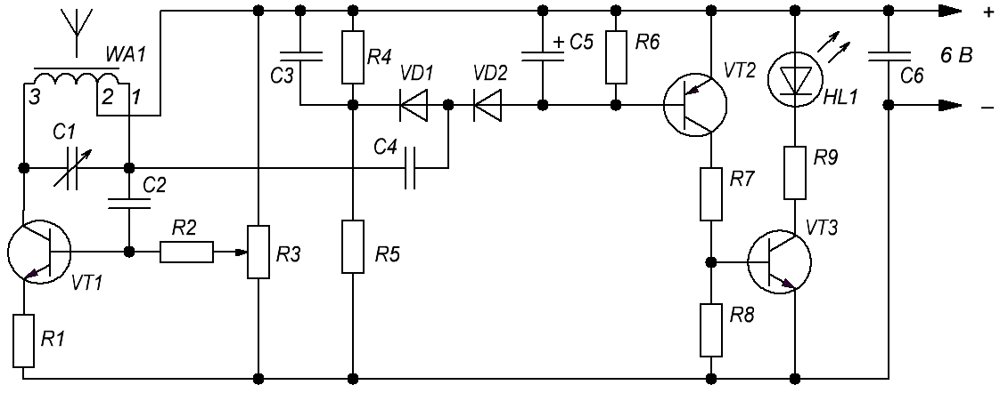

Металлоискатель-2
Датчиком в металлоискателе (рис. 1) служит магнитная антенна WA1. Сама антенна входит в состав генератора высокой частоты, выполненного на транзисторе VT1. Частоту генератора можно изменять переменным конденсатором.

Таблица 1
| Обозначение | Наименование | Номинал | Кол-во | Примечание |
|---|---|---|---|---|
| C1 | Конденсатор переменный | 25-150 пФ | 1 | КПК-2 |
| C2, C4 | Конденсатор | 510 пФ | 2 | |
| C3, C6 | Конденсатор | 0,047 мкФ | 2 | |
| С5 | Конденсатор электролитический | 47 мкФ × 16В | 1 | |
| HL1 | Светодиод | АЛ307Б | 1 | |
| R1, R4, R7 | Резистор постоянный | 1 кОм / 0,5 Вт | 3 | |
| R2, R5, R6, R8 | Резистор постоянный | 10 кОм / 0,5 Вт | 4 | |
| R3 | Резистор переменный | 10 кОм | 1 | |
| R9 | Резистор постоянный | 300 Ом / 0,5 Вт | 1 | |
| VD1, VD2 | Диод | КД521Б | 2 | |
| VT1, VT3 | Транзистор биполярный | КТ315Б | 2 | |
| VT2 | Транзистор биполярный | КТ361Б | 1 |
С выхода генератора высокочастотный сигнал поступает через конденсатор С4 на детектор, собранный на диодах VD1, VD2. Напряжение, выделяющееся на цепочке C5R6, открывает транзисторы VT2 и VT3. Светодиод HL1 зажигается. Такого состояния добиваются перемещением движка переменного резистора R3 от нижнего по схеме вывода.
Приближение к магнитной антенне любого металлического предмета вызовет такое изменение частоты генератора, что напряжение на базе транзистора VT2 начнет уменьшаться и светодиод погаснет.
Изменением частоты генератора конденсатором С1 и подбирая положение движка переменного резистора R3, можно добиться наибольшей чувствительности детектора.
Магнитная антенна выполнена на стержне диаметром 8 мм и длиной 80 мм из феррита 600НН. Обмотку наматывают в один слой проводом ПЭВ-2 0,25. Она содержит 83 витка с отводом от 9-го витка, считая от вывода 1.